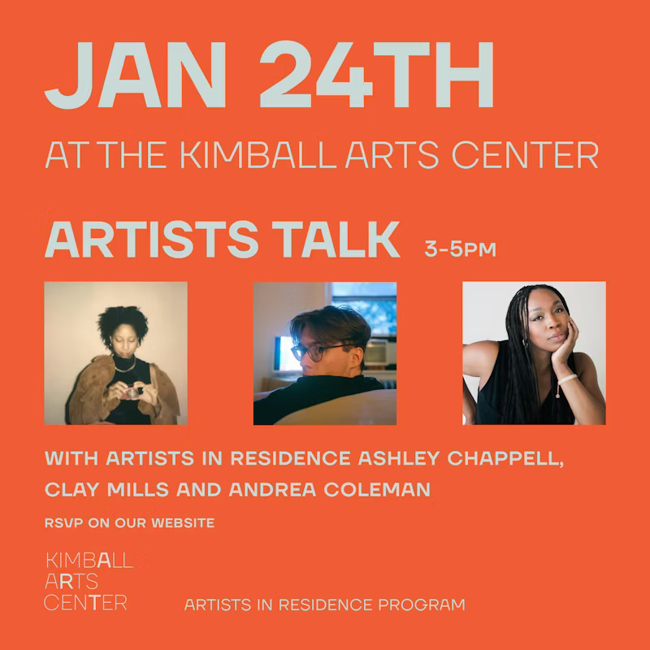

Fall/Winter AIR Artists Talk
Join us for an artists talk with our current residents, Ashley Chappell, Andrea Coleman and Clay Mills. All working across photographic mediums, we will gain special insight into their process and experience at KAC and beyond. All are welcome, free and open to the public!